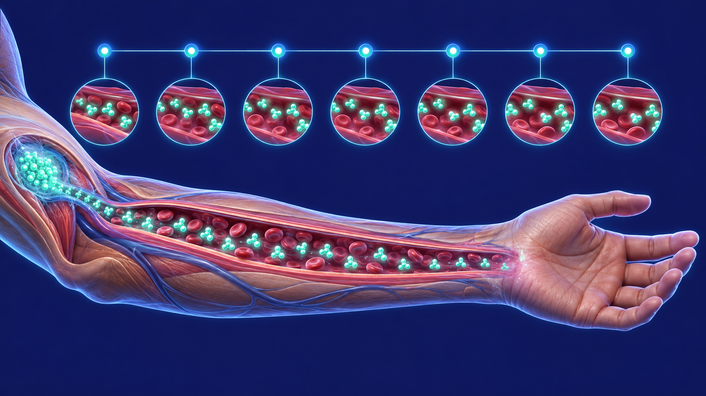
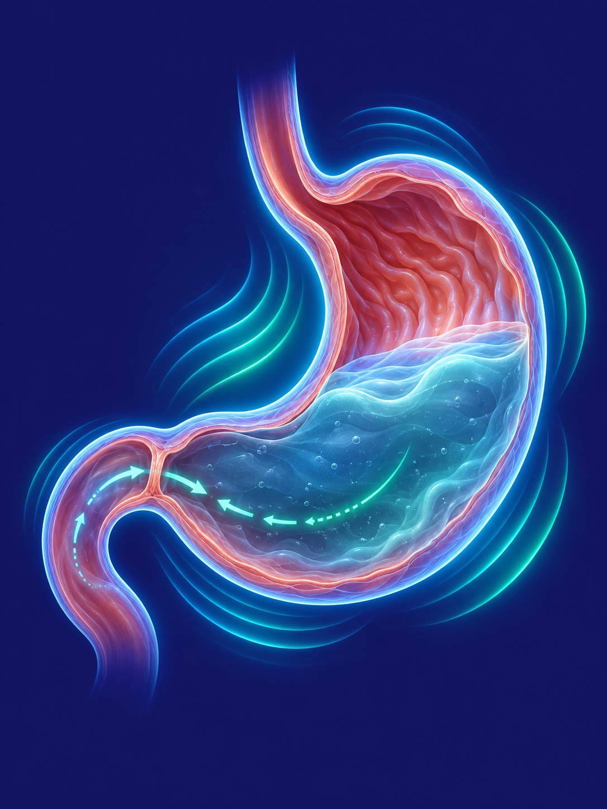
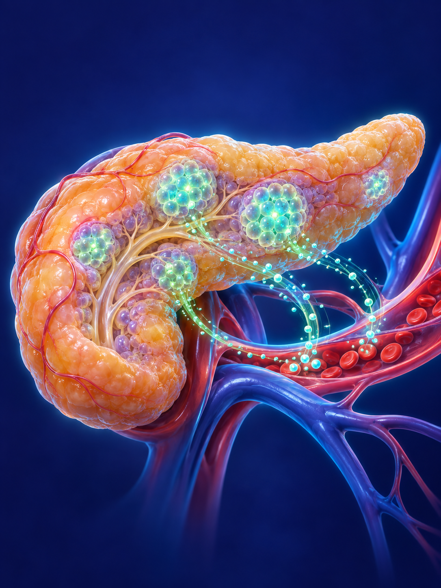

Antes de falar de qualquer remédio, vale entender como o seu corpo já controla a fome sozinho — e só depois ver, passo a passo, o que a caneta muda nesse circuito: a injeção, a liberação ao longo dos dias e o efeito em cada órgão.
Como a fome e a saciedade já funcionam no seu corpo
Seu corpo não espera remédio nenhum para controlar o quanto você come. Quando o estômago está vazio, ele libera um hormônio chamado grelina, que sinaliza fome. Quando você come, o intestino libera outro grupo de hormônios — entre eles o GLP-1 — que viajam pelo sangue até o cérebro e avisam: "já chegou comida suficiente, pode desacelerar".
Esse sinal chega principalmente a uma região chamada hipotálamo, o centro de controle da fome e da saciedade. É um sistema de troca constante: quanto mais forte e mais duradouro o sinal de saciedade, mais rápido vem a sensação de "estou satisfeito". O problema é que, no corpo de muita gente, esse sinal natural dura só alguns minutos — e a fome volta rápido.
O que a caneta faz: ela imita esse hormônio natural
As canetas emagrecedoras mais usadas hoje são análogos do receptor de GLP-1 — algumas também agem no receptor de GIP, outro hormônio intestinal parecido. "Análogo" quer dizer que a molécula do medicamento foi desenhada para se parecer com o GLP-1 que o seu próprio intestino já produz, e se encaixar nos mesmos receptores que ele usaria.
A diferença é a duração: o GLP-1 natural dura poucos minutos no sangue antes de ser degradado. A molécula da caneta foi modificada quimicamente (geralmente presa a uma cadeia de ácido graxo que se liga a uma proteína do sangue, a albumina) para resistir muito mais tempo — por isso o sinal de saciedade fica mais forte e, principalmente, mais constante ao longo do dia [1][2].
Por que a agulha vai só até embaixo da pele
A pele tem camadas: a epiderme (mais superficial), a derme e, por baixo, o tecido subcutâneo — uma camada de gordura e tecido conjuntivo com bastante vaso sanguíneo pequeno (capilar). A caneta usa uma agulha curta e fina desenhada para parar exatamente nessa camada, sem chegar ao músculo.
É ali, no subcutâneo, que o corpo absorve o medicamento de forma lenta e constante — bem diferente de uma aplicação intravenosa (que entra direto na circulação, de uma vez) ou intramuscular (que absorve mais rápido). Por isso a injeção é subcutânea: é o jeito de garantir que o remédio entre devagar no sangue [2].

Por que a aplicação costuma ser só 1 vez por semana
Depois que o medicamento entra no tecido subcutâneo, ele não cai todo de uma vez na corrente sanguínea. A mesma modificação química que faz a molécula durar mais também cria um efeito de "liberação devagar": uma parte fica retida ali na aplicação e no sangue, ligada à albumina, e vai sendo liberada de forma gradual nos dias seguintes [2].
O resultado prático é uma concentração do remédio relativamente estável ao longo da semana — sem o pico abrupto de uma aplicação diária e sem precisar repetir a dose todos os dias. É esse perfil de liberação lenta que permite o intervalo semanal entre as aplicações.
O que o sinal da caneta faz dentro do corpo
O mesmo sinal, só que mais forte e mais constante, chega a três lugares principais. Veja o que acontece em cada um:
Cérebro — hipotálamo
É onde o sinal de saciedade é lido. Com o receptor de GLP-1 mais estimulado, o hipotálamo reduz a sensação de fome e antecipa a sensação de "estou satisfeito" — você tende a comer menos na mesma refeição e sentir fome mais tarde [1].

Estômago
O esvaziamento gástrico — a velocidade com que a comida sai do estômago — fica mais lento. A comida permanece mais tempo ali, prolongando a sensação de estômago cheio entre uma refeição e outra [1].

Pâncreas
O pâncreas passa a liberar insulina de forma dependente da glicose — ou seja, só quando o açúcar no sangue está alto — e libera menos glucagon. Esse mecanismo específico ajuda a regular a glicemia com menor risco de hipoglicemia por essa via [1].
Quer entender como isso se aplica ao seu caso?
A consulta é online e a avaliação é individual, com investigação e plano feitos para você.
Agendar consultaReferências
- Mechanisms of action of GLP-1 in the pancreas, stomach and central nervous system — PMC9420816
- Discovery and development of liraglutide and semaglutide — pharmacokinetics, albumin binding and subcutaneous absorption of long-acting GLP-1 analogues — Frontiers in Endocrinology
Este material é educativo e não substitui a consulta médica. Ele não indica, prescreve nem ajusta medicação, nem promove marca ou produto específico: cada caso precisa de avaliação individual.